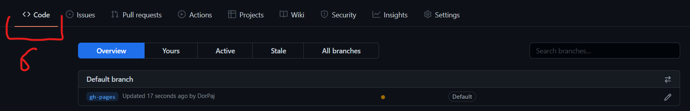

Poradnik zakładania stron internetowych na GitHubie
Zakładanie strony głównej
1.Miej konto na GitHubie
2.Utwórz nowy pusty magazyn (ang. repository) o nazwie "NAZWA.github.io" (zastąp NAZWA swoją nazwą użytkownika)
3.Napisz lub zdobądź kod źródłowy do Twojej strony w postaci pliku na komputerze. Nazwij go "index.html".
4.Dodaj plik index.html do Twojego magazynu strony głównej pod gałęzią (ang. branch) main. Jeżeli do strony masz jeszcze inne pliki, jak np. zdjęcia, dodaj je też w tym samym miejscu (gałąź main). Zatwierdź akcję klikając w przycisk Commit changes.
5.Poczekaj około 3 minuty. Upewnij się, że po wykonanych krokach Twój magazyn wygląda jakoś tak:
6.Twoja strona internetowa powinna być dostępna. Wejdź na następującą stronę: https://NAZWA.github.io (zastąp NAZWA swoją nazwą użytkownika)
Zakładanie strony pobocznej
1.Miej konto na GitHubie
2.Utwórz nowy pusty magazyn o dowolnej nazwie
3.Dodaj plik z kodem źródłowym o nazwie "index.html" oraz inne pliki do strony, jeżeli są.
4.Zmień nazwę gałęzi main na gh-pages. W tym celu naciśnij na przycisk bieżącej gałęzi main. Następnie kliknij w View all branches. Potem kliknij w ikonę ołówka przypisanego do głównej gałęzi. Wpsz nazwę i potwierdź akcję. Naciśnij na przycisk Code, aby wrócić do widoku gałęzi plików.

5.Poczekaj około 3 minuty. Upewnij się, że Twój magazyn wygląda jakoś tak:
6.Twój adres nowo utworzonej strony internetowej wygląda następująco: https://NAZWA_U.github.io/NAZWA_R/ (Zastąp NAZWA_U swoją nazwą użytkownika i zastąp NAZWA_R nazwą magazynu).